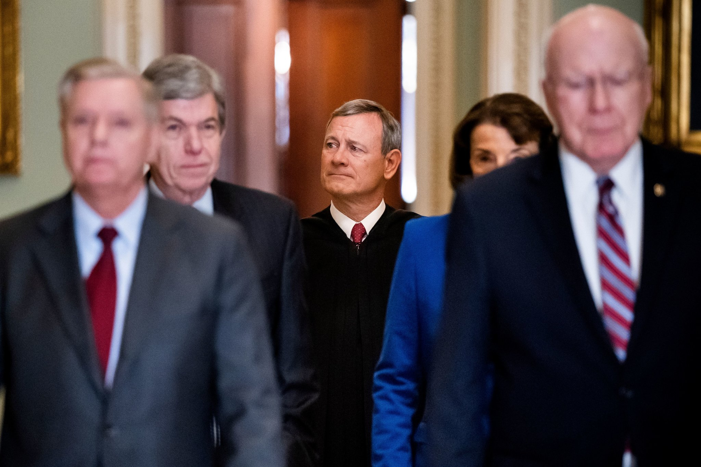
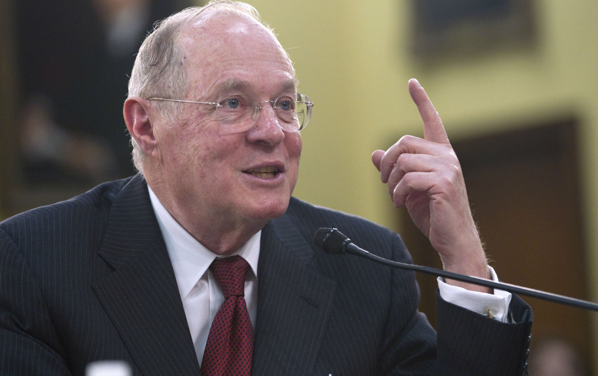
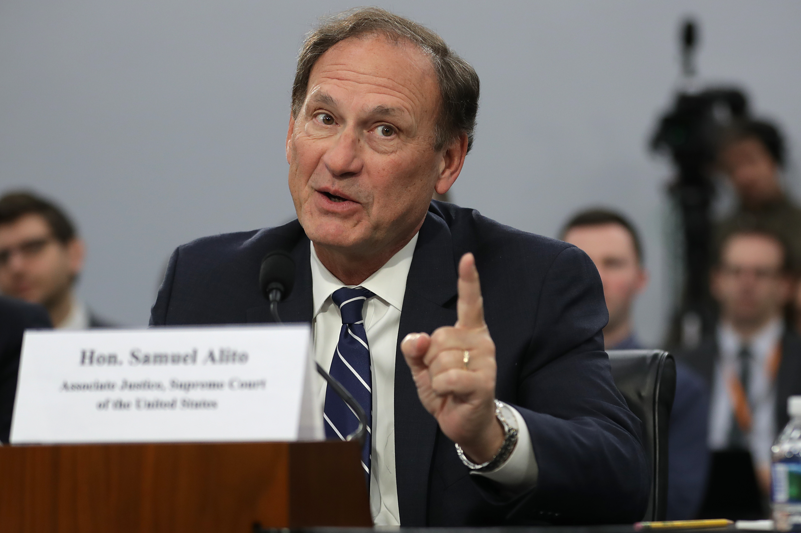
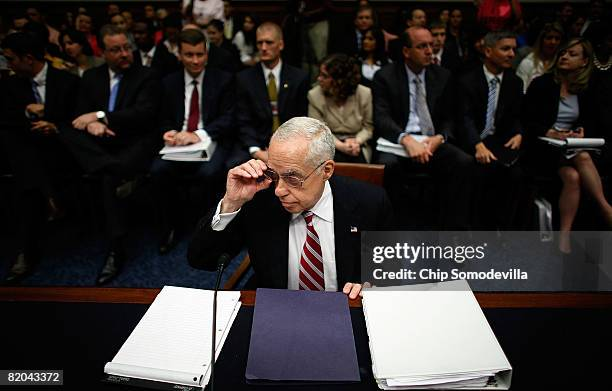
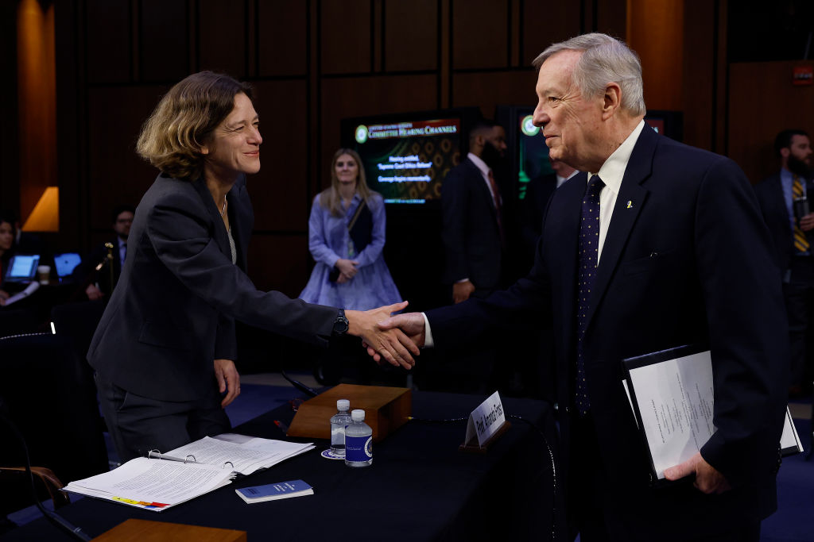
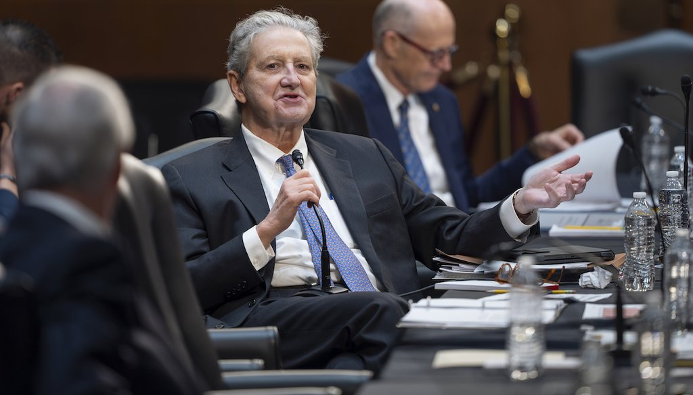

The U.S. The Constitution has always struggled between the balance of ethics, and impeding upon judicial independence. This was highlighted on April 6th, 2023, when Propublica published that Justice Clarence Thomas failed to disclose gifts from GOP donor, Harlen Crow, totaling in hundreds of thousands of dollars. These undisclosed gifts and levels of access raised criticism of potential ethical violations to the Justice serving a lifelong term.
This ultimately leads to a question of how unethical actions are checked for the highest court of the land without breaking the judicial independence that defines the role of the court. Justice Thomas’s potential ethical violations demonstrate that it is difficult to near impossible for justices to have their actions concerning possible ethical violations checked in a fast and efficient way without harming judicial independence.
The implications of this can leave the branch untrusted by the public, leaving them questioning why they give the court so much trust in the first place. Of course when the public begins to question the court, that gives power to political players not to respect the court’s decisions. Or what you might call a constitutional crisis.
Navigating Who Watches The Watchmen
To begin this discussion we must first find how effective the judiciary branch can be in checking its justices. After analysis, there is no shadow of a doubt, that in ambiguous cases which call for additional judgment, the branch has no solutions for ethical questions to be effectively solved.
Calls for a binding ethical code for the Supreme Court have long preceded the recent events regarding Justice Thomas. So much so, that Chief Justice John Roberts responded to the idea of a binding code of conduct in the 2011 end-of-year report for the federal judiciary. There Justice Roberts defined judicial independence harkening back to the 1924 Cannon of Judicial Ethics.
He notes in regards to recusal that like any other court in the land “individual judges decide for themselves whether recusal is warranted, sometimes in response to a formal written motion from a party, and sometimes at the judge’s own initiative“ but recognizes that “There is no higher court to review a Justice’s decision not to recuse in a particular case”.

Chief Justice John Roberts Visiting CongressWho Watches The Smaller Scale Watchmen?
How does a case of ethical violations work in the lower court then? Is our whole system riddled with such violations?
Take for example the Caperton v A.T. Massey Coal Co. case where the Supreme Court and appellate courts were able to review the judge's decision to not recuse in a case involving a major financial benefactor that helped elect the judge to his position. Justice Kennedy’s Majority Opinion in the case found that the judge failed to recuse himself when he had a “direct, personal, substantial, pecuniary interest” in the case and thus the case was reconsidered.

Former Justice Kennedy Testifying to CongressIn comparison, there is no court within the judicial branch to review whether Justice Thomas should have recused himself in a 2004 motion involving Harlan Crow’s real estate portfolio. Thus killing the idea of another institution within the court to check the justices decision, as which court should have higher judgement than the supreme court.
Can the Other Watchmen Watch The Watchmen?
Perhaps then, seeing that the Supreme Court should have the final say, we ought to have a system where Justices can rule if others Justices should recuse themselves. This allows the court to still have final say while having an actionable check on any possible ethical concern.
Justice Roberts however argues that we should not have the Supreme Court weigh on any member's decisions as “it would create an undesirable situation in which the Court could affect the outcome of a case by selecting who among its Members may participate”.
This leaves ultimately no recourse for ethical questions regarding recusals as there is no other person or institution to review such questions. If at least colleagues reviewed the decision to recuse, it would provide a more independent process than if a justice did the review themselves.
But at the same time if the Supreme Court judges a member's decision it could create tension in the court of who should decide to have the power to nullify another justice's judgment and create a partisan nature rather than a respectful one when the decision is disagreed upon.
This means that after Justice Thomas decided to not recuse himself there was no recourse within the judicial branch for reviewing the judgment he made, which means that the judicial branch is incredibly ineffective in checking ethical questions of the Supreme Court, unlike its effectiveness in the lower courts.
Within the judiciary branch, each individual watchmen watches themselves.
What Does Judicial Independence Even Mean?
This ability for a justice’s judgment to be checked for any ethical questions is further guarded by the principle of judicial independence, which can be used as a shield to protect from checks from other branches. We must first define what judicial independence means. We will be going over two common interpretations.
One of which will be Justice Roberts' definition is more difficult for other branches to work around. Justice Roberts defines it by the following quote:
“Judges should not be swayed by...public clamor or considerations of personal popularity or notoriety, nor be apprehensive of unjust criticism”
If this is expanded upon the rest of his judicial philosophy it could then be argued that any ethical codes that were pushed by Congress, a body which is elected by popularity, would then indirectly break this principle. The same argument would be made for the executive branch which indirectly is elected by popularity.
This leaves little room for any checking or binding code of conduct from another branch of government. Some may argue that this is just Justice Roberts's opinion. What matters is who can decide what is and is not permissible as a check on the judiciary such that it does not destroy the judicial independence that defines the institution. This answer may be found in the section of the 2011 end-of-year judicial report on the laws regarding the disclosure of gifts. Justice Roberts notes that “The court has never tested whether Congress can impose those rules upon the Supreme Court".
While not directly saying that the court would strike down any existing laws that regulate the ethical guidelines with respect to gift disclosure, it suggests that the court could test any law that regulates the court itself. And while this is just an implication from Justice Roberts, his fellow Justice, Justice Alito is of the opinion that the Constitution gives Congress no authority to regulate the court. This leads to the conclusion that in practice if the court did not like a law that regulated them, they could test the law themselves, and the court can overturn the law itself based on its constitutionality.

Justice Alito Testifying To Congress That There is a Lack of Authority to Regulate The CourtIf the laws that regulate the court could be stopped in practice by the court and the court allows any laws that they find to be permissible, then in practice, the court still regulates the court. If Congress and the executive branch ignored the testing of the ethics law by the court that would then undermine the judicial independence and legitimacy of the court to decide what is and is not constitutional thus killing the institution. By judicial independence giving the court control over who decides, the court can in effect be their own watchmen in regards to ethical codes.
What Does This Mean?
Now some may argue that this just shows that it is difficult to check the court if not near impossible but I argue that recent events have shown that this is untrue. The argument that this is just difficult instead of near impossible would be saying that just because the court can test it does not mean that it will, as seen with the allowing of public disclosure laws for justices. This also means that if the court is open to a collaborative process with Congress they can co-develop a binding code of ethics to ensure that the code would not be struck down at a future date. Now co-developing this likely still means negotiations and not getting what everyone wants meaning that maybe all the checks desired by Congress may not be in the law but in the long run perhaps the justices can be convinced that it will not affect judicial independence.
This argument still however relies on the court to be open to negotiating and co-developing such a code with Congress. With recent events, it is more evident than ever that this is unlikely to happen therefore making it a near impossible task. With the recent events regarding Justice Thomas, there have been hearings by the Senate Judiciary Committee on Judicial Ethics in the Supreme Court regarding disclosures, gifts, recusal, enforcement, and creating a binding code of ethics for the court.
Justice Roberts was invited to the hearing to testify and have his views heard and considered. He declined the invitation citing that it is exceedingly rare for a justice to appear in front of Congress and an important precedent to continue to keep judicial independence contained in the judiciary. In addition, he added a letter that reiterated what was said in his 2011 end-of-year report with all of the justices signing on.
This is judicial independence being invoked to halt a process whereby a code of conduct can be co-developed. This changes a binding code of ethics from being a difficult task to a near-impossible task. If the court does not want to have a certain code they can walk away by invoking precedent and judicial independence therefore stopping any checks on ethical violations.
How Does Justice Roberts Grapple With These Ethics?
Now others may argue that the Supreme Court does not need a binding code of ethics as in practice they do whatever a binding code would have them do. In Justice Roberts’ end-of-year 2011 judicial report, he writes that:
“Every Justice seeks to follow high ethical standards”
To Justice Roberts this key assumption is confirmed by the other branches' confirmation and nomination process. This suggests that the effect of actually having a binding code of ethics for the Supreme Court would be very little. This idea of the fair process by nomination confirming good character is held by senators such as Senator Graham echoed by former U.S. Attorney General Michael Mukasey, noting “a court legitimately nominated should not be governed by another branch” due to violating the separation of powers which trusts the judiciary to govern itself.

Former George W. Bush U.S. Attorney General Michael MukaseyRoberts added that if a justice has any ethical questions they can consult the “Judicial Conference’s Code of Conduct….from the Court’s Legal Office, from the Judicial Conference’s Committee on Codes of Conduct, and their colleagues.” If we follow Justice Roberts’s argument there is a way to ensure that the supreme court acts ethically while maintaining its judicial independence.
This would then be a close approximation of a binding code of ethics which requires interpretation anyways. He says this much in the report stating:
“But as a practical matter, the Code remains the starting point and a key source of guidance for the Justices as well as their lower court colleagues.”
This makes sense as the binding code would still require some interpretation as to whether it is being applied correctly so a justice consulting these offices and with their fellow justices for how to correctly apply the canon and the judicial ethics of the lower court would be in effect the same thing. Therefore Justice Roberts has created a scenario that has judicial ethics for the Supreme Court while not impeding upon judicial independence as everything is consulted with their colleagues and offices within that branch.
Nice Hypothetical, Now Back to Your Regularly Scheduled Reality Check
While Justice Roberts can construct a nice hypothetical it is still an unsatisfactory answer to the lack of checks on the branch. If we assume the premise that justices do seek to be as ethical as possible it leaves an imperfect system. This is best articulated by Kedric Payne, who is the senior director of ethics at the Campaign Legal Center. At the Senate Judiciary Committee’s hearing on Supreme Court Ethics Reform he testified that:
“If you rely on colleagues or anyone who is not providing guidance across the board it will not be consistent and won’t necessarily be correct”
Even under a perfect system, justices are going to be more inconsistent when compared to an independent institution that would provide consistent guidance across the judiciary. Roberts’s construction of judicial ethics leaves itself open for inconsistencies that could allow ethical violations of even well-meaning justices to fall through.
Let’s take as an example the 2004 motion involving a company in which Mr. Crow had a financial stake in which Justice Thomas did not recuse himself. If we assume both Justice Roberts’ premises and the premise that Justice Thomas consulted with the proper parties in particular with clerks, then the advice he received may very well differ from what another party says he should have done causing an inconsistency of ethics from other cases. Take this in comparison to Caperton v A.T. Massey Coal Co. where the Supreme Court as an independent body was able to rule upon lower courts to give a final say.
This directly means even if we accept that the justices are seeking to be as ethical as possible through seeking advice, Justice Roberts’ proposition that the judiciary does not need a code of conduct is unsatisfactory for how it deals with inconsistent opinions on manners that an independent body would be able to rule on. If we do not accept Justice Roberts' premise that justices are as ethical as possible then that implies that they should absolutely have an independent body as justices would not even be able to regulate themselves.
It would not be out of the ordinary to reject such a premise as the judge elected in the Caperton case was legitimately elected and would have the same legitimacy argument. Yet that proved to be a case that required an outside judgment. So the argument that the judiciary branch can regulate itself is an unsatisfactory one meaning we still do not have a way to check the judiciary’s ethics without impeding upon judicial independence.
Another Interpretation of Judicial Independence
The last counter argument accepts that no matter what it is impossible to have John Roberts's judicial independence while having a check on the judiciary for ethical violations. One solution may be to reconsider whether Justice John Robert’s definition of judicial independence is a correct interpretation of judicial independence.
This brings into discussion a second interpretation of Judicial Independence which I will analyze to demonstrate its negative effects. Professor Amanda Frost of the University of Virginia School of Law testified in the Senate Judiciary Ethics Reform Hearing that the idea of judicial independence is more nuanced than how Justice Roberts defines it. In her testimony, she separates what she calls decisional independence from the administration of the judiciary branch. She notes that “To be clear, Congress has no power to control federal judges’ decisions or penalize them for results it dislikes” as a guiding principle for what decisional independence is.
She also cites that:
“Article III of the Constitution states that the ‘judicial Power of the United States, shall be vested in one supreme Court, and in such inferior Courts as the Congress may from time to time ordain and establish.’ But the Constitution left it to Congress, acting pursuant to the Necessary and Proper Clause under Article I, to enact legislation establishing the Supreme Court and the lower federal courts.”

Professor Frost Meets With Congress and Chair of the Senate Judicial Commmittee, Senator Dick DurbinIf we accept the distinction this does give Congress an easier pathway towards having ethical guidelines as they would be collaborating in regards to the administration of the court rather than messing with anything concerning decisional independence. Thus an external watchman is created. She claims Congress has historically covered ethics citing the Ethics Reform Act of 1989 and the Ethics in Government Act of 1978 applying to all federal judges including Justices.
She also shoots down the concern of recusal decisions being made by their colleagues citing “Recusal decisions are made by state supreme court justices for their colleagues, as well as by federal circuit judges reviewing district court decisions not to recuse.” and also notes that disqualifying a fellow Justice might be a sensitive matter but so is everything that the court decides.
If we accept Justice Roberts' opinion that we ought to trust the judgment and character of the Justices it would be reasonable to have them exercise good judgment and character when making this decision.
Making Frost's Ideas Frosty
This is seen in Senator Kennedy’s statement at the Ethics Reform hearing where he states:
“Today’s hearing is an excuse to sling mud at an institution that some Democrats don’t like because they can’t control it 100% of the time, and they are going to slander it until they can control it”
Other Republicans in the hearing echoed the Junior Senator from Lousiana’s sentiments. But if a judicial reform were pushed without the support of the other party then it would suggest it could play more into the peril of politics which Justice Breyer was concerned about. He emphasized that the “court’s power must depend upon the public’s willingness to respect its decision, even those with which it may disagree”.

Junior Senator John KennedyIf this ethical reform were to somehow be pushed through congress without bipartisan support, the rhetoric that Senator Kennedy has mentioned that could divide the public on whether the just ethical reform was a result of ensuring a fair administration of justice which Congress has a right to do, or if it is a result of an indirect way to affect the decisional independence of conservative justices.
This would put into question for the public whether any decision by the court would have been the same without this partisanship ethics law. The ramifications of this would then undermine public trust in the court’s decisions believing it to be a result of that partisan law. So while it may not directly affect decisional independence it could be perceived as disrupting it which in effect could be as bad due to undermining the court by adding onto the peril of politics at the court. Therefore when a justice commits a possible ethics violation it is the least effective time for other branches to check them without possibly being perceived as undermining the courts judicial independence by pushing politics onto the court.
In Closing, Your Honor
Should we care if this is the case? The short answer is, yes. Let’s go back to Justice Breyer’s speech. He emphasizes that the power of the court must come from the trust that the public gives it. If the public does not believe that the supreme court is acting ethically they may begin to doubt its decisions as a conflict of interest.
This then can motivate political players to ignore the court's rulings citing lowering polls of approval for the court. This chain of events can lead to the destruction of power for the court and a breakdown of the fundamental structure of the government. Does this paper mean to say that it is impossible for ethical violations to be checked without judicial independence being broken? No, not necessarily.
Let’s go back to something Kendric Payne testified, noting “The court could create an independent body to check immediately”. This also comes along with Justice Amy Coney Barrett saying that it would be a “good idea” for the court to have a binding code of conduct.
So a long term solution may be ensuring that future supreme court justices would be for a binding code of conduct. This could take decades as it would require a change in the makeup of the court. But if the court were to create that independent body that could enforce, and investigate ethics within the same branch to ensure that judicial independence remains intact while ethics being a top priority to be enforced.
This means in the short term, cases like Justice Thomas’s there is no real feasible way for other branches to check the court ethically without impeding upon judicial independence or the legitimacy of the court. Who decides who watches the watchmen ends up being the current watchmen which in case decide on themselves to be the watchmen.